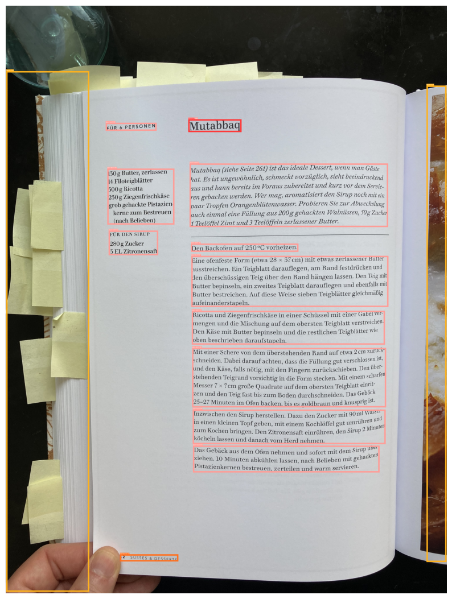

Code
import cv2
import matplotlib.pyplot as plt
from doclayout_yolo import YOLOv10Dominik Lindner
October 2, 2025
I recently trained a text or page classifier, which helped me dramatically speed up the sorting of scans for further processing in an OCR pipeline.
Recently I have been using Doclayout-YOLO for further processing of the text pages and especially the pages with mixed layout.
Doclayout-YOLO has proofed quite reliable in detecting existing text with bounding boxes. In addition it is optimized for speed.
When I finished the first part of this classifier I had the idea, why not just count the number or size of text boxes on a page?
Doclayout-YOLO was trained on top of YOLO10 with 300k synthetic documents. YOLO is a End-to-end object detection network, whereas Resnet is first a classification network. While object detection can be done with a resnet by outputting 4 numbers for each pixel. It requires further processing. This makes it slower than YOLO. YOLO splits the image into boxes and then detects classes within those boxes.
We first load the model to the GPU.
and then examine one page
det_res = model.predict(
"data/raw/text_page/IMG_0751.JPG",
imgsz=1024,
conf=0.2,
device="cuda:0",
verbose=False
)
annotated_frame = det_res[0].plot(pil=True, line_width=10, font_size=30)
img_rgb = cv2.cvtColor(annotated_frame, cv2.COLOR_BGR2RGB)
plt.figure(figsize=(10, 14))
plt.imshow(img_rgb)
plt.axis("off")
plt.show()
We can clearly see title, text and image boxes. The model ignores areas of white space. That the part outside of the book is recognized as image seems understandable, as the model has no concept of the entity book.
The model returns the type of box. A text box is of the class 1.
Let’s first count text boxes
CPU times: user 144 ms, sys: 31 ms, total: 175 ms
Wall time: 172 ms11There are 11 text boxes. The result was obtained in 179ms. My self trained CNN needs 160ms.
We allow one text box for image pages
We will evaluate this on image pages and on text pages.
199.6% is far higher than any score, I obtained during training. On the other hand 5 boxes is clearly an outlier which needs to be accepted with this simple approach.
Let’s check the text pages
We have 100% correct identification.
One place where the OCR based model was a bottleneck was automated testing. The slow performance dramatically slowed down the tests.
In the actual usage, the slow performance was is not that important as we proceed with api calls later on, which are slow too.
CPU times: user 5.06 s, sys: 368 ms, total: 5.43 s
Wall time: 1.02 sTrueOn CPU the model is slower by factor 6.
In the way we are using Doclayout-YOLO it can be called a foundation model.
Instead of spending time an resources on training of our own model, it can be quicker to run some post-processing on the output of a foundational model.
Most counterintuitive we are using a regression-classification model to perform pure classification.
Like this post? Get espresso-shot tips and slow-pour insights straight to your inbox.
Join the discussion below.